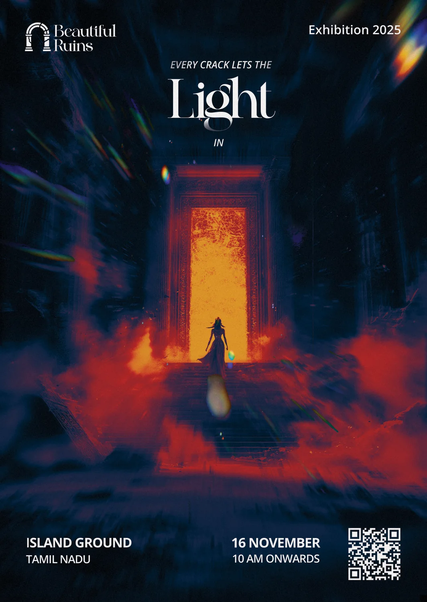

The CallPoster
A fierce queen stands at the end of a ruined hall, facing a radiant portal of light, a metaphor for brighter days after hardship. Motion blur and streaks of light pull the eye toward that moment of transition, and the dark ruins around her make the light feel earned. A QR code invites curious viewers to explore further.
